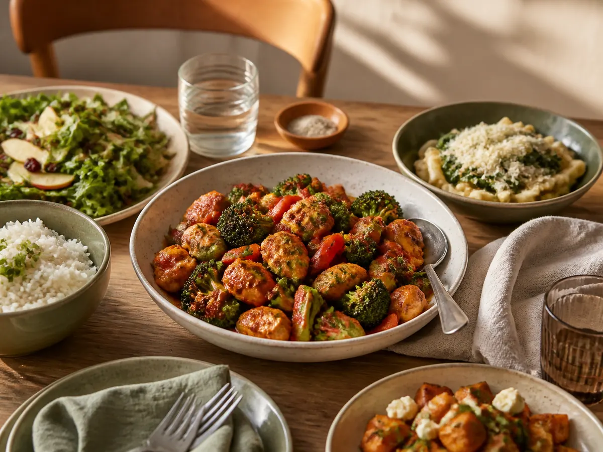
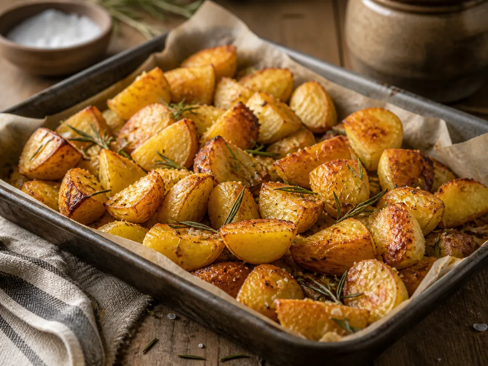
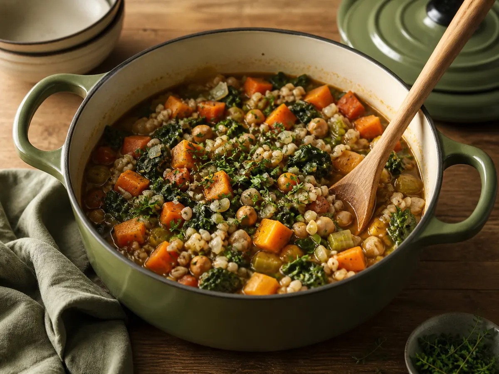
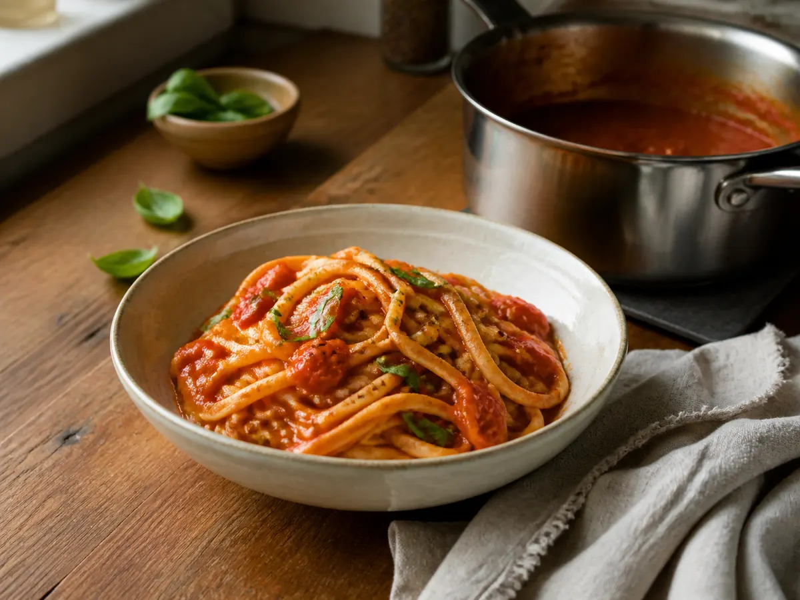
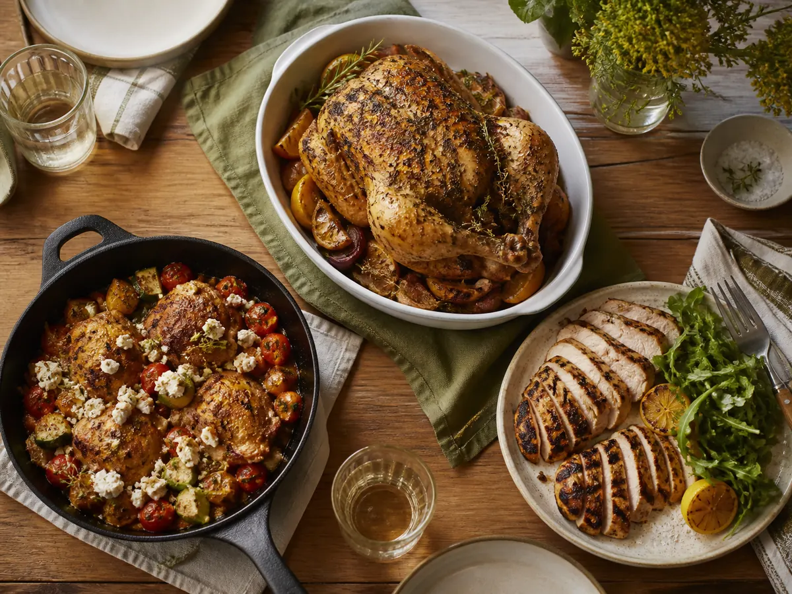

Featured story
10 Easy Weeknight Dinners You Can Make in Under 30 Minutes
A practical collection of quick, satisfying meals for nights when time is short.
Read story →Simple, reliable recipes made for real kitchens and everyday schedules.

A practical collection of quick, satisfying meals for nights when time is short.
Read story →A practical collection of quick, satisfying meals for nights when time is short.

RecipesThe simple choices that create deeply golden edges and fluffy centers.

RecipesComforting dinners with fewer dishes and plenty of flavor.

RecipesA bright, dependable sauce built from pantry staples.

RecipesFive flexible ideas that keep chicken dinner interesting.